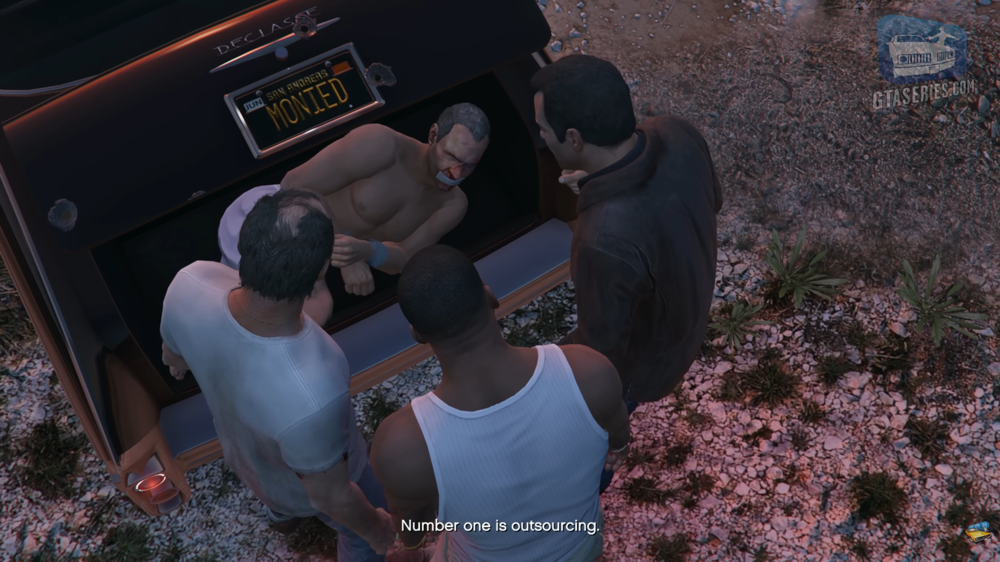

Why GTA V is the best satire for the capitalist economy
Table of Contents
Why GTA V is the best satire for the capitalist economy⌗

" You know, Devin, the way I see it – and hey, I’m no intelligent businessman like you, but the way I see it – there’s two great evils that bedevil American capitalism of the type that you practice. Number one is outsourcing. You paid a private company to do your dirty work for ya, and then you underpaid that company because you thought you were big enough and bad enough that you didn’t have to play by the rules. “
The Grand Theft Auto franchise has always struck me beacuse of the incredible storytelling, but most importantly because of the immersion, satire and social critique of the American society. In this article I want to analyze how GTA V, a 13 years old game is able to create a perfect immersion with its dark satire.
Radio and TV commercials⌗
One of the best things about every Grand Theft Auto game is the carefully curated radio music selection, but this is not the point of this article, instead I want to focus more into the advertisement intermissions, I believe they are a great way to make Los Santos and Blaine County more immersive by introducing you to fictional brands that you can recognize everywhere in the game.
One thing that I really like is that in the real world those commercials try to sell you the product by lying and deceiving you by showing you frivolous and superficial features and hiding all of the defects and making you believe that it’s “the next big thing” and you have to have it, but in game the commercials use the same sensationalistic tones while presenting the advertised product in a brutally honest way (while making fun of you, the consumer). Let’s take for example one of the beer brands in the game, Pisswasser, it literally means “Piss water” in German!
We can make the same reasoning about the in game tv, but in this case the “exagerated” effect is 100 times stronger, we can look at this commercial for “Ammu-Nation”, the weapons store, that promotes a completa apocalypse kit, complete with pornography, birth control pills and “cyanide to go out like a man”.
Going back to the radio, another thing I really appreciate both for the immersion and for the social critique are the news intermissions from “Weazel News” (parody of Fox News), whose tagline is “Confirming your prejudices”, this is a strong remark on how mass medias can be manipulated to shift the public opinion.
Here are some of most hilarious news I found:
- “Web juggernaut Eyefind is sending cars with sophisticated cameras to take pictures of every street and house in America, including images of the inside of your home. CEO Trip Hammer says that having every home and its contents searchable is the future. “This is the future!” Privacy rights advocates were booed by liberal activists who feel everything should be online, free, and searchable.” This is an obvious critique of Google and how its product keep eroding out privacy day after day.
- “Los Santos residents are excited at the announcement of a contest between Los Santos and Beijing for the title of world’s most polluted city. “We’re gonna win this one! China doesn’t stand a chance! C’mon, Los Santos, let’s show ‘em America don’t back down! Nor recycle!” I believe this news piece is more important than ever after Trump decided to exit the Paris climate agreement, and I really like how it mocks climate change deniers.
Brands⌗
I briefly talked about some product brands in the previous paragraph but I want to talk more about them. First of all I believe that Rockstar made a genious move, by creating fictional car brands they avoided costly licensing fees while still recreating realistic counter parts to the IRL cars. (They even got noticed by the Renault UK Twitter acccount).
Let’s see some comparisons between the in game brand and the IRL one:
- eCola is the in game counterpart to Coca Cola, the name alludes to the E-Coli bacteria and the company’s slogan “Deliciously infectious” suggests that it is higly addictive, just like the real beverage
- Taco Bomb is the in game counterpart to Taco Bell, the “Bomb” in the name is a reference to the explosive diarrhea you will have after eating there
- Übermacht is the counterpart to BMW, Übermacht in german means “superior”, a reference to the stereotypical BWM owner that feels like he owns the road
- Enus is the counterpart Rolls Royce and Bentley, you can see the play on the word “Anus”, same as another car brand Annis
- LifeInvader is the counterpart to Facebook, the name mocks Facebook lack of privacy; furthermore the analogous to a “like” is a “stalk” on the LifeInvader website.
Websites and the stock market⌗
Another cool thing that was added by Rockstar since GTA IV is the ability to browse the web, and in GTA V it is just as crazy as the IRL internet, but for me one of the coolest thing you can do is trading stocks.
There are two stock markets, the “BAWSAQ” (it literally spells “ballsack”), a parody of NASDAQ and the “LCN” a parody for NYSE (New York Stock Exchange) and they both trade various brands from the GTA universe, the crucial part is that they reflect what happens in the game world.
When we are introduced to Lester, the mastermind behind all of the heists, he tasks Micheal to substitute a demo Lifeinvader device with another one rigged with explosives, this device will be used by Jay Norris (Lifeinvader’s CEO) during a keynote and it will kill him on live television. After this mission Lester mentions how he did this just so he could do some insider trading, we basically helped him to manipulate the market, but this is just the first time this is going to happen. Later down the story Franklin will be tasked with various assassination missions, here are a few notable ones:
- during the hotel assassination mission we are tasked to kill the CEO of “Bilkinton Research”, the company released a pill to cure erectile dysfunction but it was found that it is the cause of various heart attacks and the CEO is tryng to cover up the scandal. This is a critique of the pharmaceutical industry where shareholder value is treated with more importance than a patient’s wellbeing
- during the multi target assassitation we are tasked to kill four corrupt jurors bribed by Redwood Cigarettes to rig a class action lawsuit related to lung disease, this is a critique on how the tobacco industry has been trying to cover up the damages done by its product by first of all lying about the potential risks of tobacco smoking and then by corrupting judges.
Cults⌗
Lastly I want to explore the three main cults inside the game, one for each charachter
Children of the Mountain⌗
The Children of the Mountain is a religious movement based in Strawberry that can be joined by Franklin, he will receive an e-mail telling him to visit their website where he will answer a multiple choiche test but regardless of the answers the result will be the same, a message will appear telling him that he is frustrated with his life and he needs to find a deeper purpose in his life. After completing the test there are other stages to progress in the cult and to complete them Franklin will have to donate money on the cult’s website. When all the donations are made a C.o.M branded t-shirt will appear in Franklin’s wardrobe with a price point of fifteen thousand dollars (that’s how much he donated). This cult is the one we know the least about and with the least activities required to end the story line, but according to them this is not a cult but it’s actually all about self-actualization.
The Children of Mountain movement is a satire for the whole self-help industry and life coaching business, these figures try and sell you super expensive courses with the promise of “unlocking your true potential”. Also it’s not a coincidence that this cult is exclusive to Frankiln, he is the embodiment of hustle culture, he constantly obsesses on how to get out of the ghetto and the cult, just like those self-help gurus, try to leverage this to make money off of those people.
The Altruists⌗
The Altruists is a cult that is located in the Chiliad Mountain State Wilderness and you can interact with it when playing with Trevor. This cult is made up of baby boomers that believe that technology and every generation after them is the root of all problems, most of them can be see naked inside their camp. Trevor can interact with them by bringing lost hitchikers to the camp, it’s implied that it’s for cannibalism. After four people are sent to the camp, an event is triggered in which Trevor is being taken to the camp at gunpoint and he has to fight his way trough the exit.
The cult is heavily inspired by the Unabomber, infact if we decode the morse code text inside their website we can see the message “THE INDUSTRIAL REVOLUTION HAS BEEN A DISASTER TO THE STABILITY OF THE HUMAN RACE” and it’s very similar to the opening line of his manifesto. The fact that this cult literally cannibalize young people is a metaphore for how the older generations have been and are destroying the younger generations’ future. The Altruists can be seen as an extremization of the mentality that many baby boomers have, they think that everything was better before, and they believe so much in this philosophy that they are willing to live in a camp without any modern technology that is almost completely separated from the modern outside world.
The Epsilon Program⌗
The last cult we are going to talk about is my favorite one, The Epsilon Program and it’s exclusive to Micheal. While its biggest appearance is in GTA V, the cult was introduced way back in GTA San Andreas.
Led by Cris Formage, the cult’s lore revolves around completely absurd doctrines: such as the Earth being exactly 157 years old, dinosaurs being a lie, and humanity descending from an alien emperor named Kraff. The actions we are forced to do as Micheal are probably the ones that will take the most to do, as with the Children of the Mountain cult, Micheal is forced to make a lot of donations, but unlike the previous cult you have to perform other tasks such as running five miles in the desert, stealing cars for the cult and wearing a weird baby blue robe for days. It all ends in a final mission where Michael must escort the cult’s massive cash reserves, the game leaves you with two choices: stay loyal and receive a rusty tractor as your “spiritual reward”, or gun down the cult members and walk away with $2.1 million in stolen cash.
Apart from the ones I told you before, I there are another two differences with the Children of the Mountain, first of all this cult is a lot more popular, it’s marketed everywhere from billboards, to celebrities on tv and radio advertisments to the point that its logo is inside the Los Santos badge (along with the bigfoot); the second difference is that just like many cults (for example Scientology, the cult that Epsilonism makes fun of) it is being marketed to actors and VIPs mainly so that they can make more money from rich people.
This is a textbook parody of Scientology, you can see this starting with the sci-fi doctrines, epsilonists believe the world was created by Kraff and this is a jab at scientologist texts regarding Xenu and the “Galactic Confederacy”. Another way we can see how the Epsilon program mimics Scientology is the fact that like Scientology owns many centers in LA to attract actors and celebrities, the Epsilon Program targets the Vinewood elite by offering them exclusive networking meetings disguised as indoctrination.
Final thoughts⌗
I have always been a fan of the world Rockstar Games created, with its incredible realism and immersion and with the current state of the world I thought that this is the best time to write another article after a long time.
Since I am not a native English speaker I used AI to help me write small sentences and translations but I tried to limit its use and most importantly to not use it when expressing my beliefs.
The image I have used in the front cover is a screenshot from this GTA Series video and a lot of infos have been taken from the GTA Wiki
I hope you enjoyed this article, if you have something to share about this you can use this repository’ issue tab.